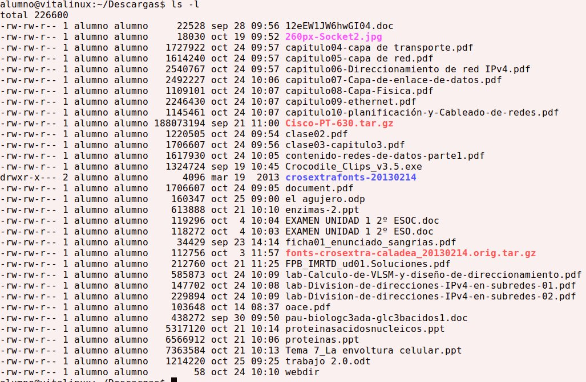
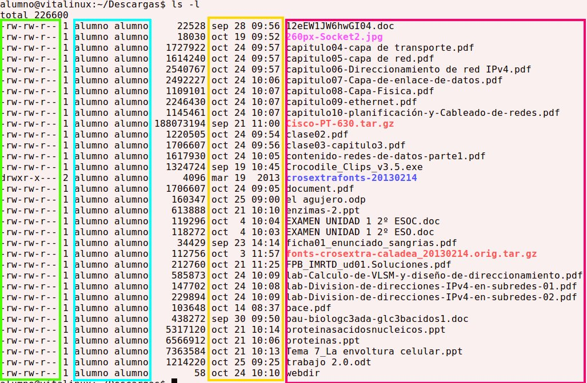

En la imagen posterior tenemos un listado detallado del contenido de un directorio. Es importante conocer que significado tiene cada dato y como podemos modificarlo.
Por ello vamos a colorearlo para desgranarlo poco a poco.

El recuadro verde (1er recuadro desde la izquierda) hace referencia a los permisos. Aquí vemos que, dentro de lo reseñado en verde, aparecen 10 columnas.
La 1ª columna puede tomar los valores:
-
d: Nos indica que se trata de un directorio
-
-: Nos indica que se trata de un archivo
-
otros: Existen otros posibles valores pero de momento no vamos a trabajar con ellos
Las columnas 2ª a 4ª establecen los permisos que sobre el fichero/directorio tiene el propietario del mismo.
Las columnas 5ª a 7ª establecen los permisos que sobre el fichero/directorio tienen los usuarios pertenecientes al grupo.
Las columnas 8ª a 10ª establece los permisos que sobre el fichero/directorio tienen el resto de usuarios.
El recuadro azul (2º recuadro desde la izquierda) nos permite conocer el propietario y el grupo al que pertenece el fichero/directorio. Veremos que en él aparecen 2 columnas. La columna de la izquierda nos indica el propietario del fichero y la columna de la derecha nos indica el grupo al que pertenece el fichero.
El recuadro amarillo (3er recuadro desde la izquierda)...
El recuadro rojo (4º recuadro desde la izquierda) nos muestra el nombre del fichero o directorio. Recuerda que si antes del nombre aparece un . significa que el fichero o directorio está oculto.
chmod
Cambia los permisos de un determinado fichero.
Será necesario tener la tabla siguiente muy en cuenta ya que mas adelante veremos que nos va a resultar de gran utilidad.
| Binario | Octal | Permisos |
|---|---|---|
| 000 | 0 | --- |
| 001 | 1 | --x |
| 010 | 2 | -w- |
| 011 | 3 | -wx |
| 100 | 4 | r-- |
| 101 | 5 | r-x |
| 110 | 6 | rw- |
| 111 | 7 | rwx |
En la tercera columna de la tabla podemos apreciar que la primera columna siempre toma el valor r o -, que la segunda columna siempre toma el valor w o - y que la tercera columna siempre toma el valor x o -. El valor r indica que se tiene permiso de lectura, el valor w indica que se tiene permiso de escritura y el valor x indica que se tiene permiso de ejecución. En caso de aparecer el - no se dispone de ese permiso.
Vamos a ver unos ejemplos:
-rwxrw-r--
En el caso anterior se trata de un fichero ya que el primer valor es un -. Sobre este fichero su propietario tiene todos los permisos rwx, los miembros del grupo tienen permisos de lectura y escritura rw- y el resto de usuarios solo tienen permiso de lectura r--.
d--xrwxr--
En el caso anterior se trata de un directorio ya que el primer valor es una d. Sobre este directorio su propietario tiene permiso de ejecución --x, los miembros del grupo tienen todos los permisos rwx y el resto de usuarios solo tienen permiso de lectura r--.
Volviendo al uso del comando chmod vamos a ver unos ejemplos:
$ chmod 754 fichero.txt
En el caso anterior vamos a establecer los permisos 754 al fichero llamado fichero.txt. El 7 se traducirá como 111, es decir, rwx. El 5 se traducirá como 101, es decir, r-x y el 4 se traducirá como 100, es decir, r-- con lo que fichero.txt quedará así -rwxr-xr--.
Con frecuencia nos interesa modificar los permisos de un directorio y todo su contenido, para ello deberemos de utilizar el comando de modo recursivo utilizando el modificador -R. Vamos a ver un ejemplo:
$ chmod -R 744 /var/www/html
En el caso anterior vamos a establecer los permisos 744 al directorio /var/www/html y a todo su contenido.
Según quien sea el propietario del fichero/directorio quizás debamos recurrir al comando sudo para disponer de permisos de administrador y poder así llevar a cabo la acción. El comando sudo aparece explicado en el siguiente capítulo.
chown
Cambia el propietario de un fichero o directorio.
$ chown profesor index.html
En el caso anterior vamos a cambiar el propietario del fichero llamado index.html. El propietaro del fichero pasará a ser el usuario www-data.
Con frecuencia nos interesa modificar los propietarios de un directorio y todo su contenido, para ello deberemos de utilizar el comando de modo recursivo utilizando el modificador -R. Vamos a ver un ejemplo:
$ chown -R profesor /var/www/html
En el caso anterior vamos a cambiar el propietario de la carpeta /var/www/html y todo su contenido. Ahora el nuevo propietario será www-data.